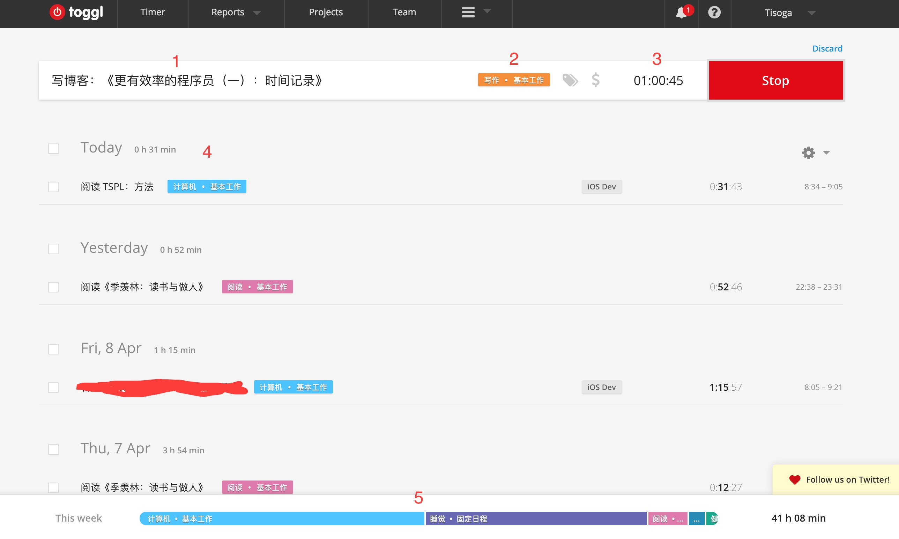
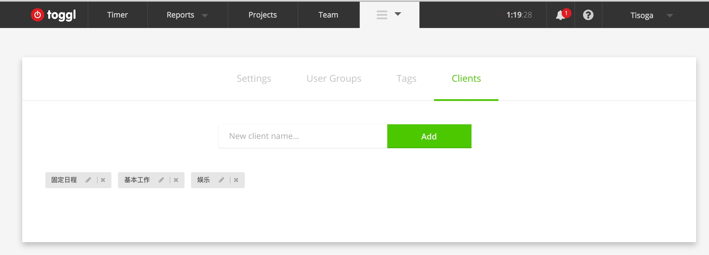
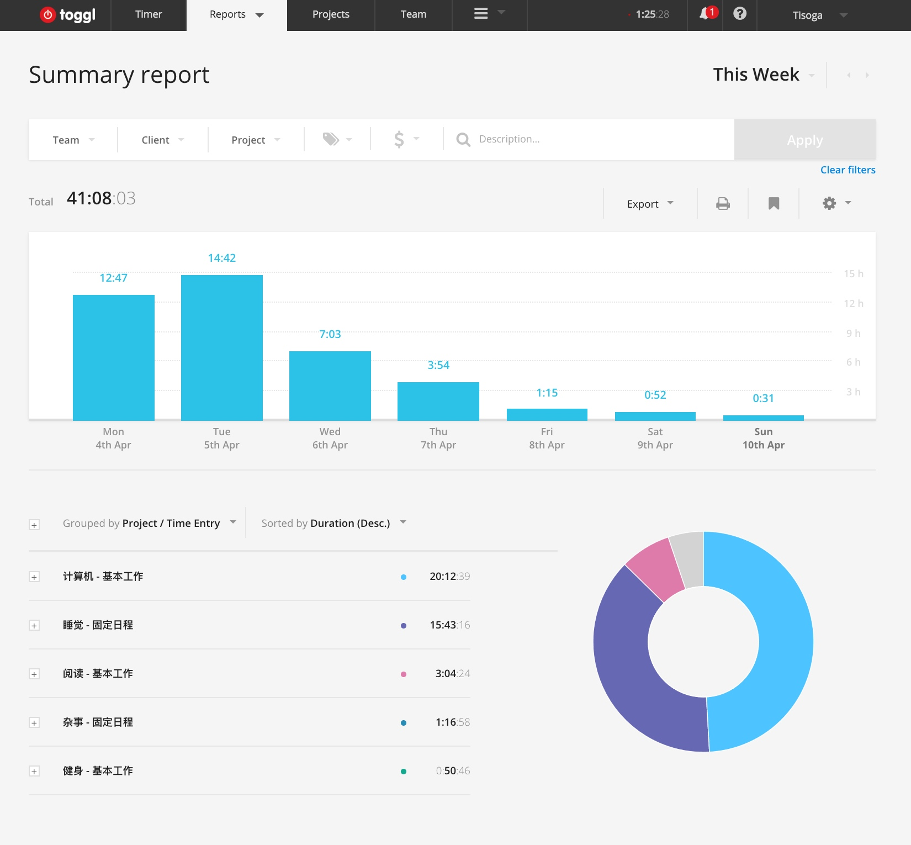
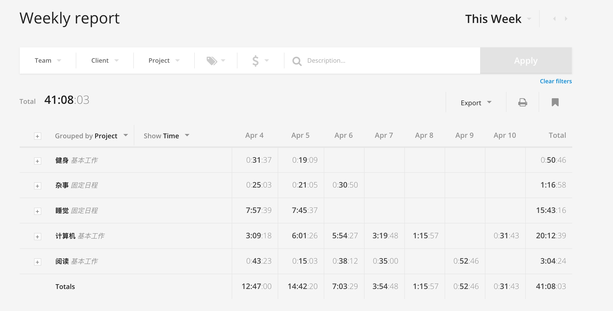
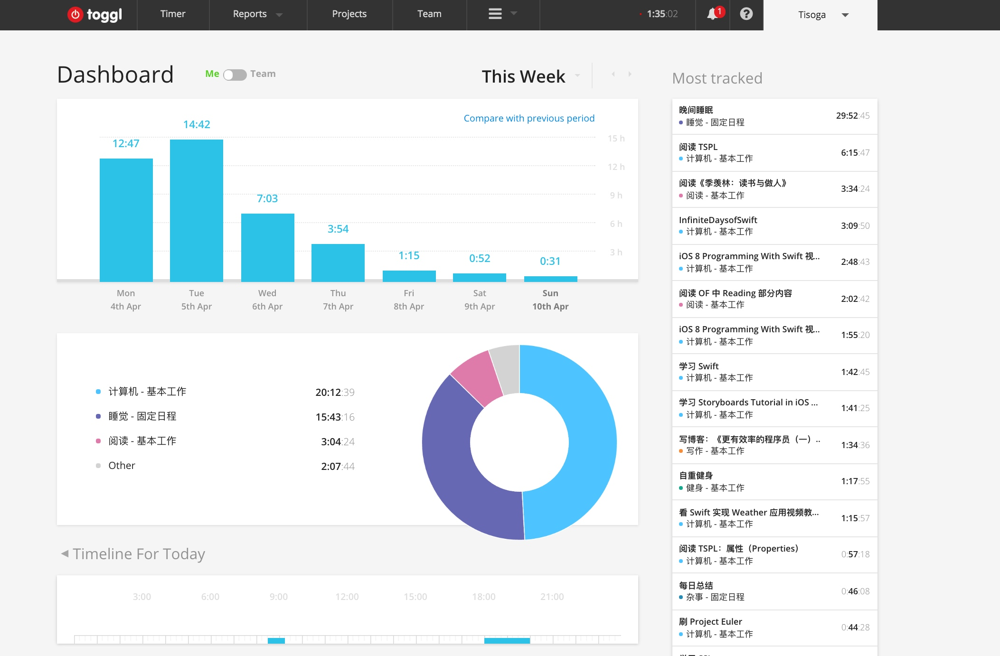

更有效率的程序员（一）：时间记录
两年前，曾经写过一篇有关时间管理的文章，那个时候还在上高二，对于时间管理仅仅是有一点肤浅的了解，自然写出来的文字也是比较幼稚的。经过两年的实践，积累了很多时间管理的经验，想要拿出来分享一下。预计会写一个系列，包括使用的工具和日常的 Workflow。
日常使用的工具有这些：
- 纸质笔记本（Moleskine）
- OmniFocus
- Evernote
- Toggl
这篇文章从题目也可以看出来，主要讲一些关于时间记录的内容，对应的工具是 Toggl。关于 Toggl，我已经在知乎的一个回答里面推荐过了，这里会更加详细地介绍一下使用流程，在谈论术之前，先来说说道的问题，为什么要做时间记录。
其实我们对时间是很不敏感的，相信你一定有过这样的体验：早晨醒来，干劲满满，准备打开电脑把昨天没有写完的代码解决，这时想到邮件还没看，先查一下邮件吧，反正花不了多少时间，在查看邮件的时候又发现知乎上有人给你发私信了，在到知乎上看一下私信，顺便回复一下，既然上了知乎，那么去首页看看订阅的内容里面有没有什么有意思的东西吧，看到一个有意思的回答，是推荐你买买买的，于是乎又打开淘宝看了看商品的具体情况，顺便加到购物车里，这是候发现已经中午了，算了，先去吃饭吧，代码等等吃完饭再写，吃过午饭后又觉得有一点困意，那就睡一会儿吧，一觉醒来，发现已经四点多了，不行了，赶紧写代码，等等，这个 bug 好像找不到问题所在啊，算了，去 Stack Overflow 上找找吧，在 Stack Overflow 上找到了答案，链接到一篇具体的解释文章，点进去看了看，发现太长了，还是先加到 Pocket 中，以后再看吧，这个人的博客似乎写得不错，浏览一下 Archive 页面看看还有没有其他的好文章，从头到尾浏览了一遍，心中不禁惊叹，写得真好！然后想到今天 Reddit 好像还没看，说不定又有什么好东西，于是又上 /r/programming 刷了一会儿，看到了几篇牛逼的文章，时间也不早了，该吃晚饭了，吃完晚饭自然又不想写代码，休息一会儿，逛一下 Bilibili 吧，看了几个视频之后突然想到今天的代码还没有写，于是又接着关掉网页去写代码，搞到深夜，终于把代码写完了，朋友圈发一条状态「奋战到深夜，终于把代码改完了！」。
多么充实的一天，你这样想到，今天似乎做了很多事情。但是实际上呢？有效的时间几乎只有两三个小时。所以你需要把做什么事用了多长时间记录下来，然后就会发现这「充实」的一天过得是多么可怕了。
根据这些时间的时间记录的经验来看，至少有以下三点好处：
- 提高对时间的感知能力，发现和避免时间黑洞。记录下时间的时候，你会刻意地关注目前手上正在做的事，如果是一些浪费时间的事，会使你减少花在上面的时间。
- 更好地制定计划。有段时间给自己制定的计划老是不能够完成，目标定得太高，再怎么跳也抓不到，通过记录一些事情所花费的时间，就可以更好地做计划，比如说看完一本书需要用多少时间。
- 激励自己。积累了一段时间的数据之后，就可以看到在某一方面投入了多少时间了，根据 10000 小时定律，可以知道自己与专家级别的能力还相差多少。
当然，凡事有利就必有弊。
- 时间记录本身也会花费时间（可以通过工具来弥补）。
- 最开始的时候总是会忘记记录。
- 事无巨细地记录时间，增加压力（这一点会在下面详细说明）。
简单地讲了一下「道」层面的问题，想要继续深入的可以看一下《奇特的一生》这本书。下面说一说「术」的层面。
简单的系统
其实最开始的时候一支笔、一本本子、一块手表就够了，这一阶段主要是养成时间记录的习惯，当然使用 Evernote 或者 OneNote 之类的软件也是可以的。可以按照以下的模板来记录：
2016/04/10
7:00 - 8:30 阅读 xxx xx 页（1h30min）
9:00 - 9:45 完成 xxx 项目 xx 功能的开发（45min）
...总结：
编程时间：xx h xx min
阅读时间：xx h xx min
有效时间合计：xx h xx min
娱乐时间：xx h xx min
...
具体的分类可以根据自己的需求来进行。如果对时间记录没有接触过的同学可以选择这个方法试着用一段时间，看有没有什么改变。
Toggl
前面说了这么多，中与引来了今天的主角：Toggl。什么是 Toggl，简单得来说，是一款时间记录的工具，试用过市面上几乎所有时间记录的工具，发现 Toggl 是最符合《奇特的一生》中的工作流的。
安装
Toggl 几乎包含了全部平台，其中最强大的属于 Web 版，各种高级的报表功能需要在 Web 版上面才能试使用。
并且它还提供了 API，可以自由定制。
基本使用
下面主要介绍 Web 版的内容。注册完登陆进计时页面就是如下图所示：

- 你当前正在记录的内容（如果不确定，可以先不填，这个是比其他软件优秀的原因之一，有时候只是想先记录下时间，之后再进行区分）；
- 当前记录内容所属分类，可以添加 Tag，后面的美元符号可以添加这个任务的花费，基本没有用到过这个功能；
- 记录的时间，可以手动添加时间；
- Timeline，每天做了什么事情用了多少时间就记录在这里（周六周日没有怎么使用，所以比较空）；
- 一周记录时间汇总。
知道了以上的内容之后就可以开始记录了，比如说就把学习 Toggl 的使用当成第一个记录的内容。
更好的分类
详细的分类可以更好地输出报表。我使用的是三级的分类：大类-具体领域分类-task。Toggl 默认只可以使用两个层级的分类，Project - Task，但是可以把 Client 这个用作最大的分类，这样就可以进行三个层级的分类，下面是我的分类内容；
- 基本工作（Client）
- 计算机（Project）
- 英语
- 健身
- 写作
- 阅读
- 工作（几乎用不到，因为还在学校里）
- 固定日程
- 上课
- 睡觉
- 杂事
- 娱乐
- 上网
- 游戏
- 视频/电影
分级不宜过多，否则会增加选择的压力，可以在使用的过程中不断改进。
最大的类别（Clients）可以在 Workspace Settings 中添加：

Project 的类别在 Projects 选项中添加，可以给每个 Project 不同的颜色以示区分。
Tag 很少使用，可以为一些相同类型的事情设定相关的 Tag 来作为补充。
强大的统计功能
使用纸笔做时间记录的麻烦之处就是统计的时候需要花费很多精力去计算，用 APP 就可以免除这些过程，直接根据记录的内容生成非常漂亮的报表，下面的是我这一周的统计内容，从柱状图可以看出这周的效率是逐渐递减的-_-|||

Reports 支持三种模式：Summary, Detailed, Weekly。上面的是 Summary 的 Reports，Detailed 会把你做的所有事情列出来，Weekly 会以周视图的方式来显示：

Reports 支持强大的过滤功能，可以根据需要选择 Reports 的时间长度、Project 内容、Tag 内容等等。比如说我想查看这周用在 iOS Dev 上的时间是多少，只需要选择 iOS Dev 这个 Tag 就可以了：

Dashboard
Toggl 还提供了仪表盘视图，在这里你可以看到最常 Track 的项目以及一些其他内容。

如果在本地 APP 里面打开了 Timeline Track，还可以在 Timeline For Today 这一栏里面查看使用了什么软件，用了多长时间。
Workflow
每天从 Todo 里面拿出一件事情，打开计时器，开始做，本着「做一件事情就把它做好的原则」去完成。积累了一段时间的数据之后，就可以更好地计划自己了，比如说本周阅读多少专业书籍，写多少代码。具体的 Workflow 需要结合 OmniFocus 和笔记本来完成，所以会在下一篇文章中来说明。
FAQ
什么事情都需要记录吗？
只需要记录重要的事情。日常生活中的吃喝拉撒记录了没有任何用处，有一段时间我一直在记录自己的睡眠时间，不过后来固定了之后就不记录了。
忘了记录怎么办？
这个只能慢慢地养成记录的习惯，如果记得大概的时间的话，可以手动录入时间。
手边没有电脑怎么办？
一般我都是用手机进行记录，如果连手机也不在手边的话，可以先拿张纸记着，之后再手动录入上去。
后记
其实，等你做了一段时间的时间日志会发现，会发现效率并没有提高多少，有时候不得不承认这个悲伤的事实，根据自己的时间日志，最高效的一天记录了 7 个小时的学习时间，相比较那些动不动就每天学习 8 小时的人来说，还是差太多了，不过好歹也算是做出了一点点努力。
写这篇文章的契机是看到了 pluskid 写的《关于知识整理、积累与记忆》，想到自己也有挺多经验可以分享的，于是便以试试的心态动笔开始写。
仓促成文，错误在所难免，还望指正。
Copyright © 2015 Powered by MWeb, Theme used GitHub CSS.